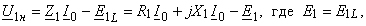

|
Холостым ходом называют режим работы трансформатора, при котором ток I2 = 0 (вторичная обмотка разомкнута). Холостой ход (ХХ) трансформатора полностью соответствует работе катушки со сталью в цепи переменного тока. В этом случае рассматривается только первичная цепь (см. рис. 7.2, а), к которой подведено номинальное первичное напряжение U1н. При этом в цепи протекает ток I0, называемый током холостого хода и равный I0 » (0,02…0,08) I1н, где I1н – номинальный ток первичной обмотки, а поступающая из сети активная мощность расходуется в активных элементах R1 и Rcm (см. рис. 6.35, б), т. е. в первичной обмотке и в ферромагнитном сердечнике. Из уравнения электрического равновесия для схемы замещения первичной цепи
Поскольку при ХХ трансформатора ЭДС Е1 практически равна напряжению сети, то можно считать, что величина магнитного потока Векторная диаграмма трансформатора при ХХ (рис. 7.2, б) аналогична векторной диаграмме катушки со сталью (см. рис. 6.36) с добавлением вектора Е2||Е1. |
|||